Win the right way
正道
Real success in direct selling is built on integrity, value and respect, not hype, pressure or shortcuts. The right way isn't just moral. It's strategic.
23 years. Two perspectives. One mission: to help direct selling leaders win the right way.

In 2003 I walked into my first direct selling opportunity with nothing but determination and a willingness to learn. What followed was a masterclass in resilience: 38 rejections, a first commission cheque of RM 128, and every logical reason to walk away. Something kept me going: a belief that there had to be a smarter, more strategic way to build in this industry.
For six years, from 2003 to 2009, I was in the trenches with my first company. Prospecting strangers, leading meetings in living rooms, building teams from the ground up. I learned what it truly costs to lead from the front lines: the late nights, the personal investment, the emotional weight of responsibility for other people's dreams.
Then, in 2009, came the rare transition from the field to the corporate side. Over the years that followed I spent 15 years in senior management across three multinational direct selling companies, with one more spell back in the field along the way: 8 years in the field in all. Suddenly I was seeing the industry from the other side of the table: designing strategies, building training systems, and understanding the corporate decisions that shape the lives of thousands of distributors.
That dual perspective changed everything. Most leaders only ever see one side. Field leaders don't understand corporate strategy. Corporate executives don't feel the pulse of the field. I had lived both, and I knew that bridging this gap was the key to building something truly sustainable.
Today I coach leaders who want to build this way, combining Sun Tzu's strategy with modern AI tools and 23 years of experience from both sides of the table.
The gap between success and failure is not how hard you work. It is how strategically you think.
Entered direct selling. 38 rejections, a first cheque of RM 128, and every reason to quit. Chose to stay and learn.
After six years building in the field, made the rare move to corporate management: market strategy, training systems, and the bridge between head office and the field.
8 years in the field in all, including one later spell, and 15 years in senior management across three multinational companies.
Wrote 直銷孫子兵法之不戰而勝, putting 23 years from both sides of the table into one strategic playbook.


Real success in direct selling is built on integrity, value and respect, not hype, pressure or shortcuts. The right way isn't just moral. It's strategic.
Hard work without direction is just exhaustion. I teach leaders to think like generals: plan, assess, adapt, and execute with precision.
The measure of leadership isn't how many people need you. It's how many no longer do. A team that runs without you is the real goal.
A tower of strength and leadership. He has mentored the entire Asia Pacific group of sales. His skill set is nothing short of extraordinary — organised, talented, multi-lingual, and an overall coordinator of organising a team.
His strong leadership, strategic thinking, and ability to deliver results are exceptional. His guidance has been invaluable to me. His interpersonal skills and innovative approach make him an essential asset.
His creativity and strategic thinking significantly boosted our marketing efforts and sales. He fostered a collaborative and motivating work environment, empowering his team to reach their full potential.
He possesses a rare ability to foster growth and success by creating an environment that is both supportive and challenging. A person of integrity and unwavering commitment, with an infectious enthusiasm.
A rare blend of insight, empathy, and strategic acumen that sets him apart. His ability to tailor personalized strategies to suit each client's unique needs is a testament to his dedication and proficiency.
He has excellent coaching ability and knows how to motivate his team members. He has warm leadership — always praises and leads by servant leadership, encouraging his team to participate and challenge themselves.
A true professional. He balances a no-nonsense approach with approachability. His leadership and strategic vision have been consistently impressive.
A standout professional in MLM. Mikael's dedication and passion are unparalleled. As a speaker, he captivates everyone — when he speaks, people ‘tabik’! A top-notch professional and natural leader. No bluff one!
直銷孫子兵法之不戰而勝 pairs Sun Tzu's principles with 23 years of field and management experience: 13 chapters, each with a real story and a weekly exercise.
On sale 20 October: see the book On sale now: get the bookKeynotes, workshops and fireside chats for companies, associations and conferences across Southeast Asia, in English, Mandarin or Bahasa Malaysia.
Speaking topicsBuilding your first team or leading thousands, the right strategy changes everything.
Get in touch